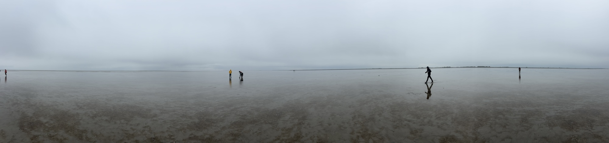

Tracking plastic through the Wadden Sea
What are the drifters?
The drifters are so-called
Stokes drifters, built by
MetOcean in Canada. They are small, white, floating devices that are designed to follow the water motion in the Wadden Sea. The drifters are equipped with a GPS and a satellite transmitter, so that we can track their position in real time.
If you found a drifter?
If you have found a drifter on the beach, it is important to leave the drifter where it is (do not touch it), as one of the goals of the project is to measure how high tides and storms move the drifters back into the ocean.
We would appreciate it if you could send us a photo and information about where you found the drifter, at
E.vanSebille@uu.nl.
Live data
We deployed the second batch of 12 drifters from just north of
Moddergat on 25 April 2025.
Their tracks can be seen in the interactive map below.
The deployment was at low tide on the mudflats just north of Moddergat, as shown in the photo below (photo by Daan Reijnders).

Tracking the first batch
We deployed the first batch of 24 drifters from the R/V Adriaen Coenen on 14 November 2023.
Their tracks can be seen in the interactive map below.
Project funding
Funding for this project comes from the
Pay-it-forward campaign of the
Utrecht University Fund,
Stichting Pieter Bastiaan, and the project
Tracing Marine Macroplastics by Unraveling the Ocean's Multiscale Transport Processes with project number VI.C.222.025 of the research programme Talent Programme Vici 2022 which is financed by the Dutch Research Council (
NWO).
Project background
The article below (in Dutch), from
Noordhollands Dagblad on 22 November 2023, provides some background on the project. Or check out this
interview on NPO Radio1's Langs de Lijn en Omstreken (also in Dutch).